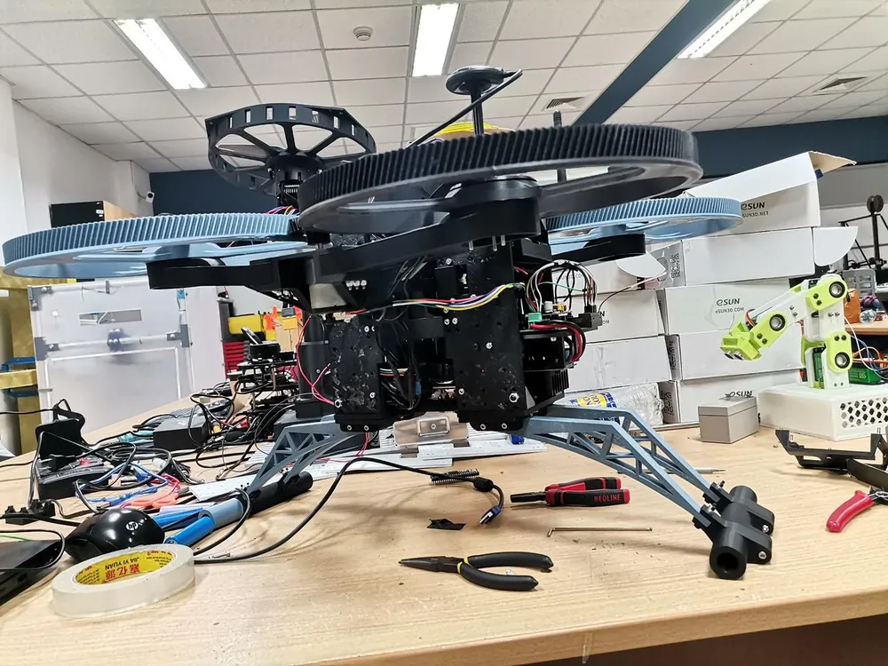
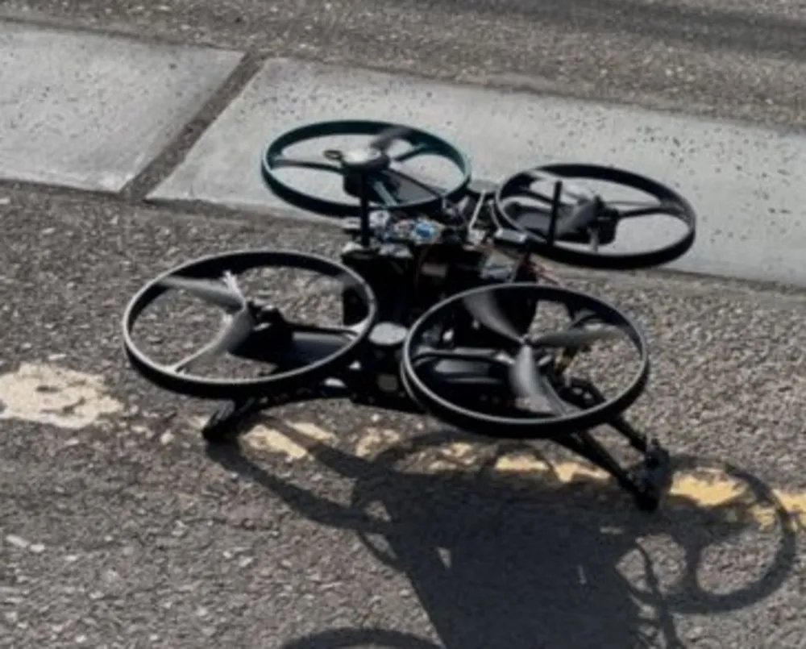

This project consisted of a course-based implementation conceptually inspired by the ATMO morphobot architecture (Mandralis et al., 2025). Rather than introducing a novel morphing mechanism, the objective was to investigate mechanical integration challenges, manufacturability constraints, and structural feasibility within an academic prototyping framework.
My primary contribution focused on the mechanical system architecture, CAD modeling, and structural design of the platform.
Research Context
The architectural concept draws inspiration from: Mandralis, I., Nemovi, R., Ramezani, A., Murray, R. M., & Gharib, M. (2025). ATMO: A morphobot capable of dynamic ground-air transition. Communications Engineering, 4, 74.
While the published work presents a research-grade morphobot capable of dynamic transitions, this project focused on exploring the mechanical feasibility of a conceptually related architecture within the scope and constraints of a course-based prototype.
Mechanical Architecture
The platform integrates a quadrotor propulsion module, a ground support structure, a central modular electronics housing, and 3D-printed structural components. Design considerations included structural rigidity under thrust loads, weight distribution and center-of-mass alignment, modular assembly for rapid prototyping, and mechanical integration of propulsion and support mechanisms.

Prototype Fabrication
A full-scale prototype was manufactured and assembled using rapid prototyping techniques. Structural components were fabricated primarily through 3D printing and integrated with propulsion hardware.

Experimental Evaluation
The prototype underwent preliminary testing under controlled and outdoor conditions, including static load validation (1 kg to 9 kg), ground-to-air transition attempts, and preliminary takeoff and landing tests. Indoor testing enabled partial transition under constrained environments. Outdoor experiments highlighted stability limitations under uneven terrain and current mass distribution.
These observations provided insight into mechanical integration challenges and practical constraints associated with hybrid morphing platforms.

Project Scope
This was a collaborative course-based project. My primary responsibility was mechanical architecture design and CAD modeling. Electronics integration and low-level control implementation were developed by other team members.